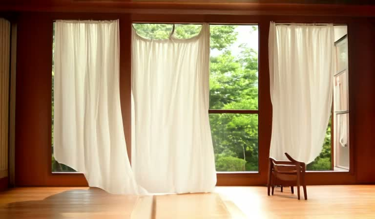
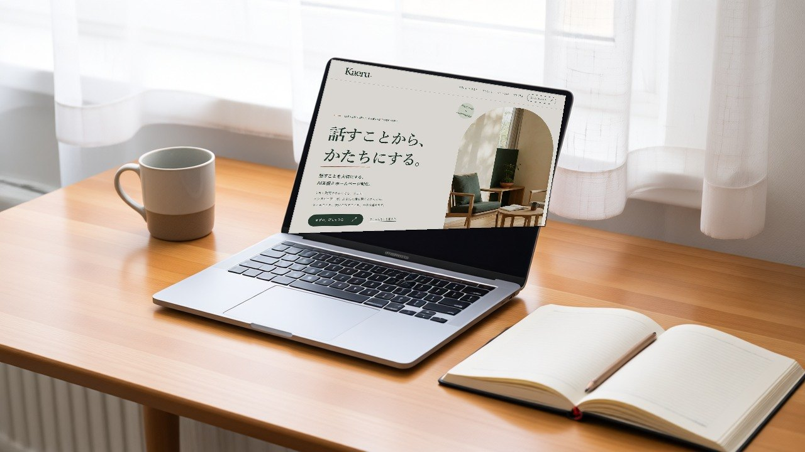
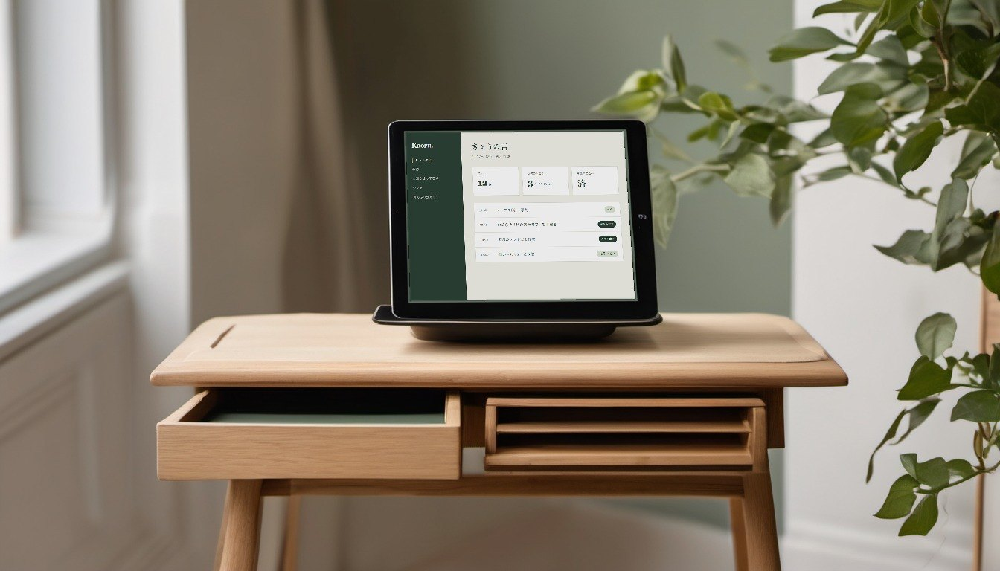
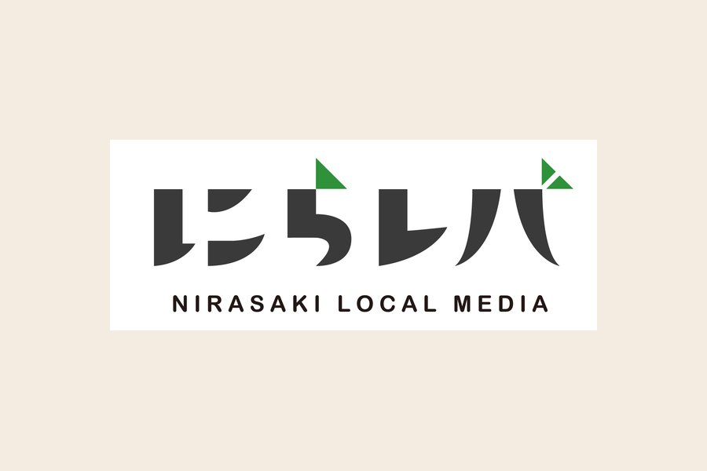

まず、話を聞く。
完成した原稿も、詳しい依頼書もいりません。今の状況と、これからやってみたいことを聞かせてください。
対話・ヒアリング編集者・インタビュアーとつくる
話すことを大切にする、
AI支援とホームページ制作。
うまく説明できなくても、大丈夫。
インタビュアーが、あなたの話を聞くところから。
つくることも、使いこなすことも、一緒に進めます。

まずは、話すことから。
西村直樹 ／ 編集者・インタビュアー 山梨・韮崎 → 全国オンライン
01 / 大切にしていること・進め方
「何を載せよう」「AIは自分の仕事にも使えるだろうか」。
最初から、答えがなくて大丈夫です。ふだんの言葉で聞かせてください。
聞く。ほどく。一緒につくる。この順で進みます。
完成した原稿も、詳しい依頼書もいりません。今の状況と、これからやってみたいことを聞かせてください。
対話・ヒアリングお話をもとに、目的と内容を整理。何をつくるか、いくらかかるか。納得してから次へ進みます。
構成・提案・お見積もり制作や導入の後は、実際の使い方まで。続けて相談したい方には、更新やAI活用の伴走も用意しています。
制作・導入・定着支援02 / できること

何を伝えて、どんな人に届けたいか。対話から言葉と構成をつくり、デザイン・実装まで進めます。文章を用意するところから、一人で抱えなくて大丈夫です。

どの仕事に、どう取り入れるか。日々の業務を一緒に整理し、使い方を考えます。導入・研修・継続的な相談を通じて、仕事の中で活用できるよう伴走します。
03 / つくったもの
言葉と、デザインと、動く仕組み。
実際のサイトをご覧いただけます。
04 / 相談と費用の目安
まだ依頼するか決まっていなくても。
いくつか選ぶと、相談の進め方と
おおよその費用が分かります。
3つの質問・登録不要
回答は保存されません。フォームを開くときだけ、選んだ内容を下書きとして引き継ぎます。
キャリアの出発点はITエンジニアでした。仕事は退屈で、タイパだけで動く日々。その退屈から逃れるために会社を辞め、個人として働く道を選びました。
転機は、批評ラジオやエッセイとの出会いです。自分の視野の狭さ、言語化の稚拙さを自覚し、「では何をすればいいか」を探る行為そのものが面白くなった。内省にハマり、ジャーナリングが続き、哲学対話の場に通うようになりました。
いまは山梨県韮崎市を拠点に、哲学対話のファシリテーション、地域の場づくり、コーチング、サイト制作とAI導入をしています。共通しているのは「その人の熱意を観測し、伝わる形に編集する」こと。退屈な作業はAIに渡し、夢中になれることに時間を戻す。夢中こそが退屈を救う、と信じています。
ここでいう編集とは、要素を見渡し、「どこを見せて、どう見せるか」を考えることです。
やりたいことや、これからの働き方について話したい方へ。継続的な対話の時間として、伴走コーチングも行っています。
初回体験：60分 5,000円
継続：月2回 2万円〜／月（3か月単位が基本）
06 / 地域での活動
サービスの外で続けている活動です。
ここで見ているものが、仕事の土台になっています。

哲学対話 ／ ファシリテーター
韮崎の本屋「YOMU」で開く哲学対話。店内を歩いて本のタイトルや目次から「問い」を拾い、輪になって話します。沈黙も、まとまらない話も歓迎。定員8名の小さな会を、ファシリテーターとして進めています。
インスタグラムで活動を見る ↗
地域のイベント ／ インタビュー・運営
街で暮らし、働く100人の物語に出会う。毎回5人が登壇し、20回で100人に達したら解散するイベントを、韮崎の蓮照寺の本堂で毎月開いています。人が自分の熱を人前で語り、それが伝わっていく瞬間に立ち会う場です。
運営やインタビューを通じて、街で暮らす人の話を聞いています。
公式サイトを見る ↗
地域メディア ／ 取材・執筆
山梨県韮崎市のローカルメディア。街の店主や移住者、協力隊を取材し、この街で暮らし働くことの面白さを記事にして届けています。100人カイギのレポートも掲載。
記事を読む ↗活動先へのリンクは新しいタブで開きます。
07 / お問い合わせ
「こんなこと、相談していいのかな」も、そのままで。
今考えていることを、聞かせてください。